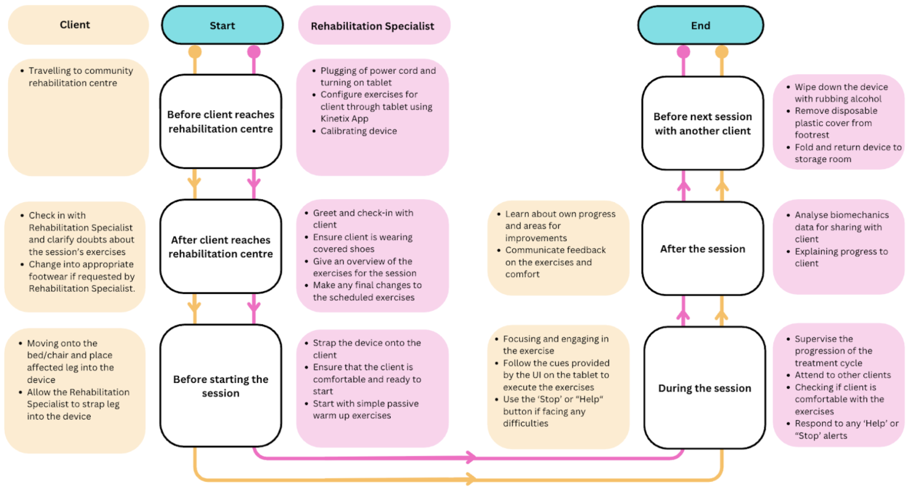

This section aims to present the distinction of Kinetix from current devices in the market, design specifications, and the explanation of the device requirements, including the context of use. A comprehensive literature review of current rehabilitation methods and challenges faced by physiotherapists has been documented in the Interim Report.
2.1 Comparison of current marketed device
Two devices with similar intended use target the acute and late subacute phases of stroke recovery, including the Sidra LEG and the Kinetic Spectra Knee CPM. Table 3. below distinguishes our proposed device from those in the current market.
| Aspect | Feature | Kinetix | Sidra LEG | Kinetec Spectra Knee CPM |
|---|---|---|---|---|
| Exercise Customization | Supports 6 exercise types in supine and semi-Fowler position | Yes | No | No |
| Supports Activities of Daily Living (ADL) and Full Range Recovery | Yes | No | No | |
| Supports Active & Passive Recovery | Yes | Yes | No | |
| Sensing Capabilities | Positional Sensing | Yes | Yes | No |
| Force Sensing | Yes | No | No | |
| Ergonomics | Supports diverse limb dimensions | Yes | Yes | Limited |
| Data Sensing/Computation Capabilities | Range of Motion (1° increments) | Yes | Yes | Yes |
| Strength Estimation | Yes | No | No | |
| Repetition Counting & Segmentation | Yes | No | No | |
| Jerk (Smoothness Metric) | Yes | No | No |
2.2 Design requirements
This section will document the final design specifications table based on the identified user needs from our literature review, such as anthropometric data, site visits, and interviews with rehabilitation professionals conducted during the interim phase of the project. The rationale for the requirements can be found in the Interim Report, and slight changes have been made to the values to align more closely with existing literature (Table 4).
| Nested Sub-System | Variables | Range/Requirements | User Needs Addressed |
|---|---|---|---|
| Sensing | |||
| Plantar Force Sensing | Range of Force | 0–1500 N (safety factor of 1.5) |
U01, R05, R06 |
| Sampling Rate | 5 Hz | U01, R05, R06 | |
| Medial-Lateral Force Sensing | Range of Force | 0-272 N | U01, R05, R06 |
| Thigh Force Sensing | Range of Force | 0-450 N | U01, R05, R06 |
| Positional Sensing | Accuracy of Joint Angles | 12° | U01, R05, R06 |
| Data Processing and Analysis | |||
| Latency | End-to-end | <100 ms edge-to-UI | R06 |
| Electrical | |||
| Linear/Lateral movement | Minimum Motor Holding torque | >1.0 Nm | S01, R01, R02, R03 |
| Precise Movement Control | 10 mm screw lead and screw diameter < 20 mm | ||
| Microcontroller Unit (MCU) | Flash Size | > 4 kB | R01, R02, R03, R04, R05 |
| Clock Speed | >16 MHz | ||
| RAM Size | >32 kB | ||
| Processor | 32-bit | ||
| Power delivery | DC-DC Buck Converter | (72-12 VDC to 5-3 V) | R01, R02, R03, R04, R05 |
| AC-to-DC Adapter | (240 VAC to 72-12 VDC) | ||
| Mechanical | |||
| Portability | Weight | <13 kg | DS03 |
| Size | 100 x 33 x 33 (cm) | ||
| Structure | Type of structure | Hollow Structural Sections | D01 |
| Range of Motion (ADL mode) | Max angle of Hip Adduction | 15 degrees | R03, R04 |
| Max angle of Hip Abduction | 20 degrees | ||
| Max angle of Hip Flexion | 100 degrees | ||
| Max angle of knee Flexion | 120 degrees | ||
| Durability | Duration of Usage per Treatment Cycles | 5 min | D8 |
| Number of Treatment Cycles a Day | 10 cycles | D9 | |
2.3 User Journey
Following an in-person interview with a physiotherapist from the stroke support station (S3) we mapped out a user journey documenting actions done by both the client and physiotherapist at every stage of the rehabilitation session. The purpose of this user journey is to educate us on how we can design for the context of usage, promoting better user experience through purposeful designing. The use of the device has been demonstrated in the user tests, explained in further detail in Figure 4.

Figure 4. User Journey.